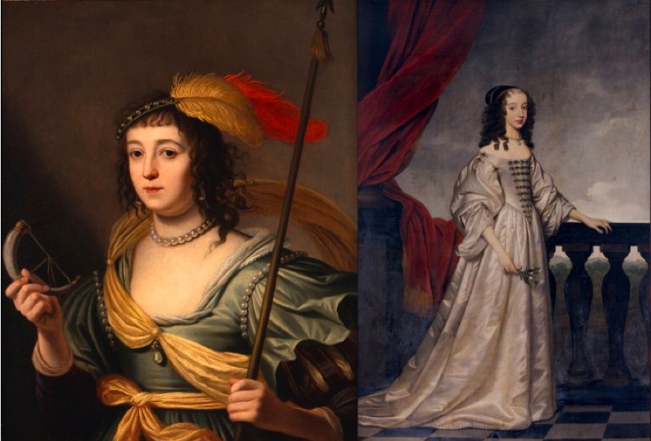

Brieven van de Hollandse en Friese Stadhoudersvrouwen 1605 — 1725
Dit project is gewijd aan de brieven van zes vooraanstaande vrouwen uit de Republiek der Verenigde Nederlanden: Amalia van Solms-Braunfels, Mary Stuart en Mary II Stuart, Sophia Hedwig von Braunschweig-Wolffenbüttel, Albertine Agnes van Oranje-Nassau en Henriëtte Amalia von Anhalt Dessau.
De meeste brieven van deze zes vorstinnen waren tot nu toen niet ontsloten, noch gedigitaliseerd. Deze digitale editie maakt het mogelijk om nieuw wetenschappelijk onderzoek te verrichten naar de invloed die deze vrouwen hadden op de politieke, culturele en sociale processen, zowel binnen als buiten de zeventiende eeuwse Republiek der Verenigde Nederlanden.
In samenwerking met Koninklijke Verzamelingen Den Haag en Oxford University’s (Women) Early Modern Letters Online, (W)EMLO, heeft het Huygens ING ruim 3.500 brieven bewerkt en beschikbaar gesteld via de portal van EMLO. Hierin is de metadata van het volledige corpus niet alleen integraal doorzoekbaar, maar iedere stadhoudersvrouw heeft ook een eigen catalogus waarin de correspondentie ook afzonderlijk te raadplegen is.
- Overkoepelende pagina met brieven van alle zes vrouwen: 3.543 brieven
- Sophia Hedwig von Braunschweig Wolffenbüttel, echtgenote van Ernst Casimir van Nassau-Dietz: 150 brieven.
- Amalia van Solms-Braunfels, echtgenote van Frederik Hendrik van Oranje-Nassau: 1,170 brieven.
- Mary Stuart, echtgenote van Willem II van Oranje-Nassau: 352 brieven.
- Albertine Agnes van Oranje-Nassau, echtgenote van Willem Frederik van Nassau-Dietz: 404 brieven.
- Mary (II) Stuart, echtgenote van Willem III van Oranje-Nassau: 116 brieven.
- Henriette Amalia von Anhalt-Dessau, echtgenote van Hendrik Casimir II van Nassau-Dietz: 1,342 brieven.